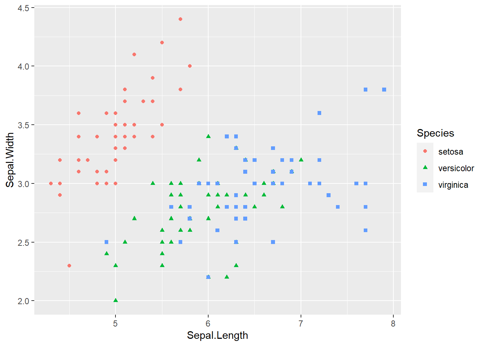

paste0(R.Version()[c("major","minor")], collapse = ".")[1] "4.2.2"March 3, 2023
Some describe it as magic, and others have not used Quarto. I was introduced to Quarto as it was added to RStudio in an update in July 2022. Once I saw Thomas Mock’s talk Quarto for the curious I knew I had to explore Quarto. I would go into detail about the technical aspects of what Quarto does, but why not show what it can do? This very website is built with Quarto, and so is Quarto’s website.
I built this site using RStuido as the environment, but if you prefer something like `VS Code` then you can use the Quarto extension. My site’s code lives in it’s own GitHub repository which you can view by clicking the code icon on the right side of the navigation bar…or here. I use GitHub for version control, but also host my site with GitHub Pages. I bought my domain name and it was simple to get it up and running from there.
When I want to do some sprucing up to my site I create a new branch and edit the branch. Once I edit the files and code I will render my site in RStudio and then push the commits. Finally I will do a pull request and merge the branch with my main branch. GitHub Actions will then publish the site, however you do not need to do the branching. A single commit on the main branch will trigger GitHub Actions and update your site automatically. This means you can edit and publish the edits all from the code editor!
Quarto documents .qmd are the files that you edit, and they have YAML code blocks at the top of the document that let you control different features such as: titles, what the output is, and many other controls. The output control is very special as you can render a file as .html output for webpages and many other formats! Do you need a slideshow? A .pdf report? A book?
Here is what the YAML looks like for this blog post!
---
title: "Why Quarto?"
date: "3/03/2023"
description: "Why I build my website with Quarto..."
categories: "Quarto"
format: html
editor: visual
highlight-style: github
---You can create and run code chunks, this allows you to create reports, KPI dashboards, articles and so much more. I would describe Quarto as a way to share data analytics or knowledge in a meaningful and completely customized way. It is easily integrated into workflows, and you do not even have to know R. You can use Quarto with Python, Julia, Observable or R. Have a team of R users and Python users? They all can work together with Quarto, and even within the same document…
#| warning: false
#| message: false
library(tidyverse)
ggplot(data = iris, aes( x = Sepal.Length, y = Sepal.Width,
shape = Species, color = Species)) +
geom_point()
Did you notice in the code chunk the #|’s? This is how you tell the chunk how to behave, I stopped warnings and messages in that chunk. You can use Quarto as Jupyter notebooks or R Markdown notebooks and render those notebooks to your desired output. Another thing is that you can use a visual editor, all within your development environment, making it that much easier to make some beautiful deliverables or notes for yourself!
Language agnostic for data teams
High quality outputs, and many types of outputs
Flexible workflows and ease of use
It is fun, and works via magic
If you are still not convinced…
I encourage you to look into Quarto as it would take a dedicated blog to really do Quarto justice, as one post can only cover so much…
Here’s a Quarto blog made with Quarto, by the Quarto team!